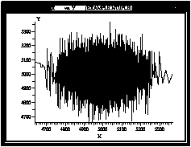
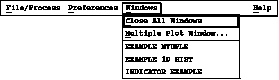
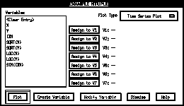
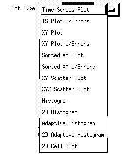
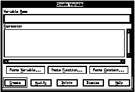
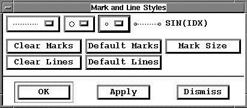

The most significant new features in Histo-Scope V3.1 are:
* Configuration files for saving complete Histo-Scope sessions
* Windows for viewing groups of plots
* Ability to transform Ntuple variables with arbitrary arithmetic expressions
* New XY plot types
* Titles and optional statistics included on printouts
Configuration files are files of Histo-Scope commands for opening windows, scaling plots, adjusting plot appearance, and setting slider positions. Save Configuration... saves the current appearance of your Histo-Scope session (excluding opening the file or making the connection). Load Configuration... re-loads these files. Configuration files are an editable but undocumented ASCII text file format. These features are available from the File/Process menu of the Histo-Scope Main Window.
Multi-plot windows are windows containing several plots arranged in a grid pattern. They can be created automatically to display all of the histograms defined in a single category, or they can be created manually by beginning with an empty window, and dragging plots from other windows, including plots derived from Ntuple data. To create a Multi-plot window, select Multiple Plot Window... from the Windows menu of the Histo-Scope Main Window.
The Ntuple Window now has a new button "Create Variable" which allows you to create "virtual" Ntuple variables derived from the real variables, constants, and random values. The new variables are specified as FORTRAN or C style expressions, with many built-in functions and constants.
XY Plots in previous versions of Histo-Scope meant a single X variable vs. one or more Y variables, with the Y variables plotted against an X axis which was sorted on increasing values of X. This style of plot is still available as the "Sorted XY Plot" in the Ntuple Window; however a more rational, unsorted, X vs. Y plot is now also available which can be used to plot XY point pairs, either using connected lines, or markers alone. An XY Plot with no lines acts as an alternative representation to the Scatter Plot, with points represented by larger, more visible markers and optional error bars. Up to nine (or three with errors) distinct sets of points can be plotted in the same plot.
PostScript resolution has been improved in some of the plots, and more information is now included on printed and PostScript plots. Window titles are now included, and plot statistics will appear to the side of the plot if Show Statistics is selected from the Plot Settings menu before selecting Print... or Generate PostScript....
This user's guide is now available as a World Wide Web page. This can be accessed from a hypertext link at URL:
http://cdibm.fnal.gov/nirvana/histo.html
Figure 11. Create Multiple Plot Window
There are two ways these multiple-plot windows can be populated with plots:
1) All the 1-D and 2-D Histograms in the current category (as listed in the Histo-Scope Main Window) can be displayed in a single multi-plot window. To do this, click on the Use Current Category push button. Histo-Scope will automatically fill in the multi-plot window title and a default number of rows and columns that will accommodate the number of histograms in the current category. The window title, # Rows, and # Columns can be modified by the user as desired.
2) For more flexibility, don't press the Use Current Category button. Instead just type the window title and number of rows and columns for the Multiple Plot window, and after pressing "Create Window" use the mouse to drag the plots one-by-one into the initially empty multi-plot window. This method gives you the most flexibility for choosing and placing plots for display.
Click on the Create Window button to create the Multiple Plot window. To insert plots of Ntuple variables into a multiple plot window, leave one or more mini-plot "cells" empty and use the middle mouse button to drag a plot onto the empty cell of the mini-plot. (To drag the plot, press the middle mouse button while the pointer is over the plot area of the desired Ntuple plot, and, while holding the mouse button down, move the mouse pointer over to the empty mini-plot area, and then release the middle mouse button. When you press the middle mouse button, the pointer changes to indicate that your are initiating a drag.)

Figure 12. Dragging an Ntuple Plot into a "Mini" Plot
To change the size of the individual plots in Multiple Plot windows, use Motif window controls such as the window sides or corners to make the entire window larger or smaller.
Each mini-plot in the Multiple Plot window allows you to adjust its plot settings in a manner similar to the individual plot windows. To bring up a Plot Settings menu, point to the plot with the mouse and press the right mouse button.
***************************************************
An XY Plot plots pairs of points in two dimensions. The points are taken in sequence from the Ntuple and are initially drawn with lines connecting the points and no markers. The XY Plot can also be used as an alternative to the Scatter Plot. In this case, use the Set Mark and Line Style plot adjustment to turn on markers and turn off connecting lines. (When the number of points is small, the marks drawn by the XY Plot are much more visible than the pixel-sized dots drawn by the Scatter Plot.) The XY Plot can also plot multiple sets of variable X-Y pairs from the Ntuple, distinguish them with different marker styles, and draw both horizontal and vertical error bars. Up to nine X-Y pairs can be plotted in one window. To reveal additional assignment buttons, use the mouse to grab the bottom frame of the Ntuple Window and pull downward. The window will grow as you move the mouse pointer downward.

Figure 26. Sorted XY Plot
Since the points in an XY Plot are not sorted the initial appearance of the plot may include lines which loop back on themselves. Another type of XY Plot is the Sorted XY Plot. In a Sorted XY Plot, the x-axis variable is sorted in order of increasing value and each succeeding variable is plotted along the y-axis against the first (sorted) variable. This can often be a better way to observe how y varies with x. A Sorted XY Plot can display up to seventeen Y-variables in one window. If only one Y-variable is plotted, its name appears at the top of the y-axis. If more than one is plotted, a legend of variable names appears at the bottom of the plot.
Both types of XY Plots allow you to specify variables as error values. An XY Plot w/Errors can plot up to three X-Y pairs with their corresponding vertical and horizontal errors. A Sorted XY Plot w/Errors can plot up to five Y-variables and their corresponding (vertical) errors. (To expose hidden plot variable assignments, drag the bottom frame of the Ntuple window downward with the mouse. The window will grow downward as you pull.)
*******************************************************

Figure 10. Windows Pull-down Menu

Figure 21. Ntuple Window

Figure 22. Plot Type Pull-Down Menu

Figure 23. Create Variable Window

Figure 39. Mark & Line Styles Window
(shown larger than actual size)